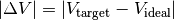
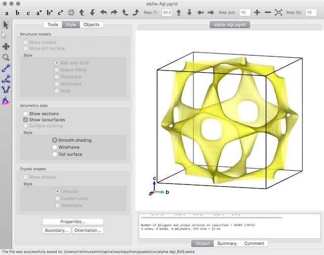
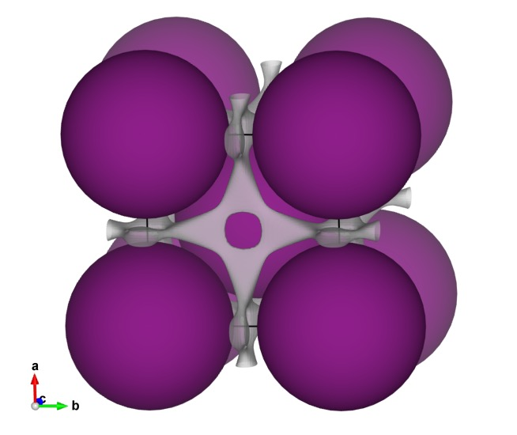
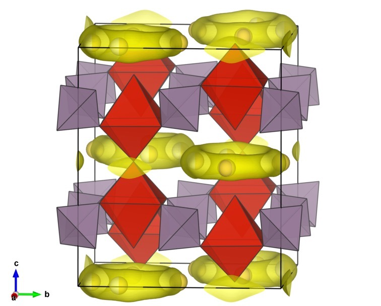
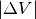
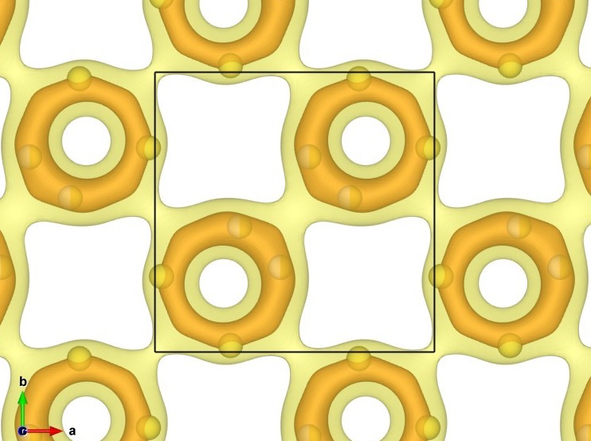
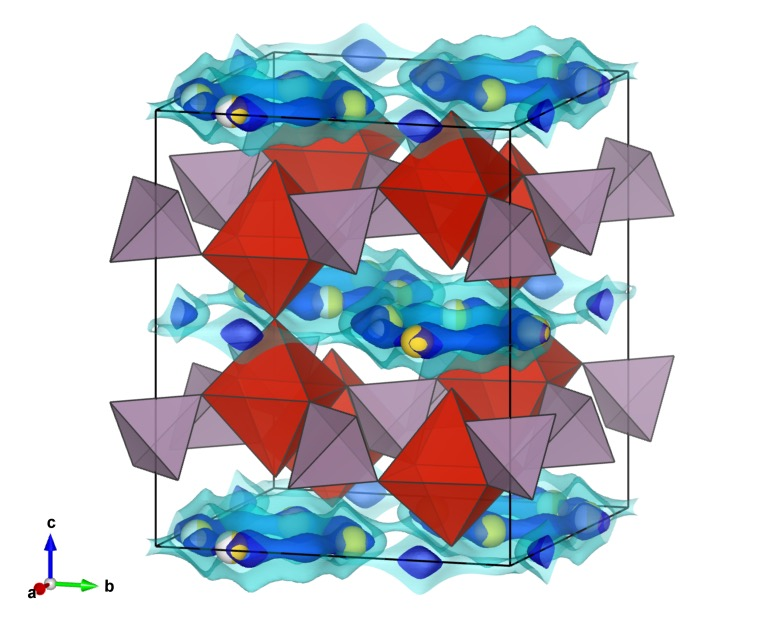

PyAbstantia¶
About¶
PyAbstantia is a Python-based program for bond-valence sum (BVS) mapping and bond-valence energy landscape (BVEL).
The author is Shin-ichi NISHIMURA.
Similar softwares are already available:
PyAbstantia is designed to visualize the ion diffusion pathways in two ways:
- BVS (including softness-sensitive BVS)
- BVEL
BVS mode¶
In this mode, PyAbstantia outputs a three-dimensional map of deviations from the ideal valence of the target ion:

BVEL mode¶
For details of BVEL, read the review and papers by Prof. Stefan Adams.
Changelog¶
- Jul. 21, 2017: Version 0.7b.
build_lib.shwas modified for compiling with ifort on macOS. - Jul. 21, 2017: Version 0.7a. The gfortran compiler options in
build_lib.shwas fixed. - Jul. 15, 2017: Version 0.7. This is the first public release of PyAbstantia.
Installation¶
PyAbstantia is mainly written in Python. The latest version (0.7) has been tested on Python 3.6.x and Python 2.7.x. The NumPy modules are required.
Core parts of the map calculation are written in Fortran.
Install¶
- Expand the archive
$ tar xvfj PyAbstantia-0.7a.tar.bz2
$ cd PyAbstantia-0.7a/
- Compile Fortran modules
$ ./build_lib.sh
- Make a symbolic link to the main program
$ ln -s [WHERE_YOU_EXPANDED]/PyAbstantia-0.7/pyabst.py [ACTIVE_PATH]/pyabst
Intel Compiler¶
If you need more speed, you can use Intel Fortran Compiler (ifort) for compiling the core modules written in Fortran.
To use the ifort, edit the following part of build_lib.sh:
FC=gfortran
as
FC=ifort
How to Use¶
Run in terminal:
$ pyabst [OPTIONS] [INPUT_FILE]
Simply:
$ pyabst sample.inp
This execution outputs a binary file sample.pgrid for visualizing with VESTA.
Options¶
-mp [NP]Enable multiprocessing.[NP]is a number of processes.-tOutput the 3D-map data in the ASCII format. (*.grd format)
For example:
$ pyabst -mp 4 -t input.inp
Input File¶
PyAbstantia requires a input file storing the atomic coordinates information and the parameters relating to BVS.
The input file is written in ASCII format.
Lines starting with # are treated as comments.
Arbitral numbers of blank lines are allowed.
Note
PyAbstantia does not use any symmetry operations. You have to supply all of the atomic coordinates in the unit cell. Use CIF mode for automatic generation of the input file. RIETAN-FP and its associated environment may help to generate the input file and to run the map calculation.
Example: BVS mode¶
# alpha-AgI.inp
# Title
alpha-AgI
# Lattice constants a, b, c, alpha, beta, gamma
5.06 5.06 5.06 90.0 90.0 90.0
# Formal valence of the target ion Ag^+
1.0
# Number of counter ion species
1
# Symbol of the counter ion and bond valence parameters, R_0 and b
I 2.38 0.37
# Resolution
50 50 50
# Atomic symbol, fractional coordinates and occupancy
I 0.0 0.0 0.0 1.0
I 0.5 0.5 0.5 1.0
After running PyAbstantia, open the output file alpha-AgI.pgrid by VESTA.
Then:
- Set the isosurface level to 0.4.
- Deactivate the “Show Sections”.

You can visualize the BVS isosurface with the crystal structure by importing the *.pgrid file to the crystal structural data. The purple spheres are the iodide ions. The isosurface is drawn at a BVS mismatch level of 0.2 for the silver ion Ag+.

Example: BVEL mode¶
For BVEL mode, a keyword BVEL should be given at the end of title.
This keyword activates an internal flag for BVEL.
# LiMn2O4_HT_BVEL.inp
# Title
LiMn2O4_HT BVEL
# Lattice constants
8.2483 8.2483 8.2483 90.0 90.0 90.0
# Target ion
Li
# Formal Charge
1.0
# Covalent radius
1.33
# Number of ion species
3
# Formal Charge
1.0 3.5 -2.0
# D_0
0.0 0.0 0.98816
# R_min
0.0 0.0 1.94001
# alpha
0.0 0.0 1.937984
# Covalent radius
1.33 1.61 0.66
# Resolution
82 82 82
# Atomic symbol, fractional coordinates and occupancy
Li 0.12500 0.12500 0.12500 1.000
Li 0.12500 0.62500 0.62500 1.000
Li 0.62500 0.12500 0.62500 1.000
Li 0.62500 0.62500 0.12500 1.000
Li 0.87500 0.87500 0.87500 1.000
Li 0.87500 0.37500 0.37500 1.000
Li 0.37500 0.87500 0.37500 1.000
Li 0.37500 0.37500 0.87500 1.000
Mn 0.50000 0.50000 0.50000 1.000
Mn 0.50000 0.00000 0.00000 1.000
.
.
.
Run from CIF¶
PyAbstantia can read the Crystallographic Information File (CIF) as input data of crystal structure. This mode helps users to generate the standard input files via step by step prompts.
This mode is implemented by using a CIF parser in pymatgen. Install pymatgen to use CIFs as inputs.
$ pyabst [OPTIONS] sample.CIF
Following options are available only in the CIF mode.
-aSet the “softness-sensitive” parameters for the bond-valence calculation automatically.-r [STEP]Set resolution automatically with resolution[STEP]in Å. If[step]is not given, a default value 0.1 is used.-eGenerate the input file for BVEL mode.
Note
Since the calculation conditions are case dependent, fully automatic generation of the input file is not a realistic way. Some parameters can be set to unreasonable values in the automatic generations. All the users have to check and edit the generated input files carefully before running the map calculation.
Warning
PyAbstantia does not handle the formal charges in CIF. Users must specify the formal charges explicitly in the input file.
Tutorial¶
Na3V2(PO4)2F3¶
BVS¶
In this tutorial, we will use a CIF as an input. So you need to install pymatgen to use the CIF parser.
Download a CIF file from Crystallographic Open Database (COD).
$ curl -O http://www.crystallography.net/cod/1521543.cif
or
$ wget http://www.crystallography.net/cod/1521543.cif
The source of CIF is:
Le Meins, J.M.; Crosnier-Lopez, M.P.; Hemon-Ribaud, A.; Courbion, G., Journal of Solid State Chemistry, 148(2), 260–270 (1999) DOI: 10.1006/jssc.1999.8447
Just run PyAbstantia in the command line prompt:
$ pyabst -mp 8 -a -r -e 1521543.cif
Answer to several prompts:
Input file: 1521543.cif
--- CIF mode ---
Input target ion
Na
Input a formal valence number of target ion.
1.0
Input a number of species for counter ion.
2
Input counter ion species 1 of 2
O
Input counter ion species 2 of 2
F
Resolution was set as 90 90 108
-----------------------------------------
1521543.inp is generated.
1521543_BVEL.inp is generated.
-----------------------------------------
Title: 1521543
Lattice Parameters:
a = 9.047 Å, b = 9.047 Å, c = 10.705 Å
alpha = 90.0°, beta = 90.0°, gamma = 90.0°
Data points along each axes: 90 90 108
Number of Processes: 8
Multiprocessing is not applicable.
No. of processes was reduced to 7.
Multiprocessing is not applicable.
No. of processes was reduced to 6.
Output file: 1521543.pgrid
----------------------------------------
Calculation time for 3D-BVS: 7.18 sec
done
Then you will get following three files.
1521543.inp: input file for BVS1521543.pgrid: 3D map data of BVS1521543_BVEL.inp: input file for BVEL
Open the 5121543.inp with your text editor and check the parameters.
If you edit the input file, you need to rerun PyAbstantia.
$ pyabst -mp 6 1521543.inp
After running PyAbstantia, open the CIF by VESTA and import 1521543.pgrid.
Set the isosurface value to 0.2, and disable the sections.
{kind=link}

You can visualize multiple isosurface levels simultaneously. (

= 0.1 and 0.5){kind=link}

BVEL¶
Open and edit 1521543_BVEL.inp.
(You must change the formal valence of V, and input the Morse potential parameters for the Na—F bond.)
Run PyAbstantia.
$ pyabst -mp 8 1521543_BVEL.inp
Then you will get 1521543_BVEL.pgrid storing the BVEL map. The isosurfaces in the below image were drawn at levels at -2.9 and 1.4 eV (0.5 and 2.0 eV above the lowest energy, respectively).
{kind=link}
